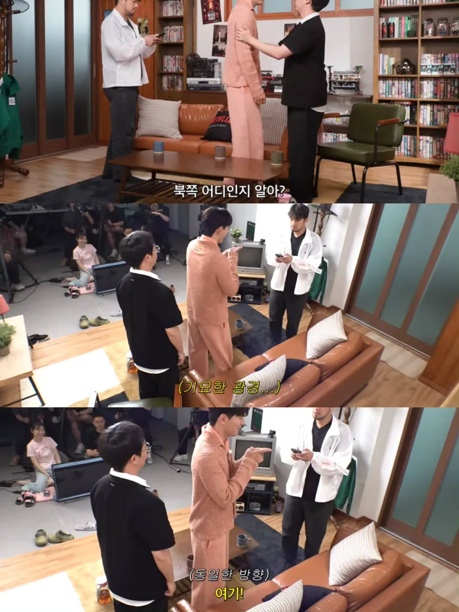

얼굴이 더 신기하다 ㅅㅂ ㅋㅋ
이거랑 비슷한 까라로 할머니들중에 임신한여자 알아보는분들 가끔있음 ㅋㅋㅋ
나도 흔한 능력하나있음 ㅋㅋ 여러 소리 섞여있어도 어떤소리가 왜났는지 유추가능 배그할때만 발동함 근데 그걸 주변 사람보다 특출나게 잘했음 ㅋㅋㅋ
오 난 배그만 하면 소리를 자세히 못듣겠음
총소리는 들리는데 위치 가늠이 전혀 안됨
이것도 초능력?..
에어기어가...진짜라고...?
내 친구도 저런애.있엇음
대충 한바퀴 돌아보고 이쪽이 북쪽같은데
동쪽같은데 하면 10에8은 맞더라
그냥 대충 느낌이 온다던데
나 : 얼굴 잘알아봄
영화나 드라마에 잠깐 나온 단역배우
10년후에 다른 분장하고 다른 단연으로 나와도 알아봄
"어? 그때 ㅇㅇ영화에 ㅇㅇ역으로 나온 배우다!!"
살아보니 쓸모없는 능력이었음 경찰견이라도 되면몰러
나도 이거 어릴때는 됐는데 4년전부터 안됨
지구 자기장에 문제가 생긴거네
에이징 커브
나도 느낄수있나 싶어 회전의자에 앉아 눈감았는데 모르겠다
자기자기열매 능력자네
북쪽에 계신 아름다운 메리메리!!